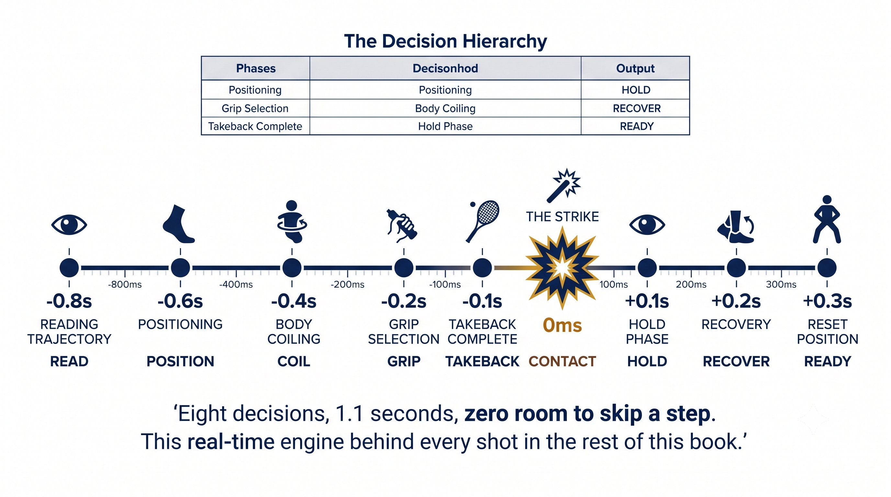
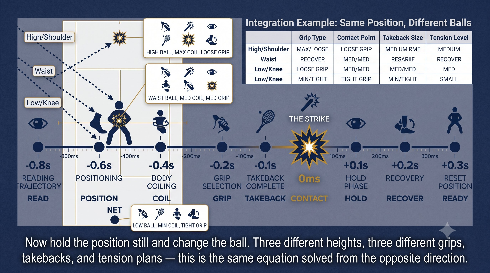

Chapter 7: The CORE System
(English version of Chapter 7 in the United Tennis Handbook)
CHAPTER 7

Figure 1
THE CORE SYSTEM
How Court and Ball Flow Into Grip, Contact, Takeback, and Tension
Every shot is one loop: the court tells you what face you need. The ball tells you what takeback you get. You deliver both with grip, contact, and tension.
Court plus ball gives you the problem. Grip plus contact plus takeback plus tension is your solution. The loop closes at contact.
— Henry Pham
The CORE Equation
The CORE loop runs in real time, on every single shot:
CORE loop: court plus ball → required face → grip plus contact → takeback plus tension → deliver the face at contact → the result feeds the next loop.
Figure 7.1: One loop, five decisions. Court position and ball speed arrive first. Required face angle follows. Then grip, contact point, takeback, and tension all flow from that face requirement. The loop closes at contact.

Figure 2
The Decision Hierarchy (0.8 Seconds)
Your brain processes this in a fixed order. You can't skip steps.
Figure 7.2: Eight hundred milliseconds. One pass through the CORE loop. Each column is a decision you can't skip — read them left to right, not top to bottom.

Figure 3
The Rule
The loop is sequential: court, then ball, then face, then grip, then contact, then takeback, then tension. Skip one link and the chain breaks.
Integration Example: Same Ball, Different Court Positions
Take a waist-high ball arriving at 80 km/h. The required face is the same everywhere: slightly closed, about 3 degrees. But your position changes everything else about how you deliver it.
Figure 7.3: Same waist-high 80 km/h ball. Four court positions. Four completely different solutions — because your position changes the face requirement, which changes everything downstream.

Figure 4
Coach's Note
Same ball, four positions, four different solutions. The ball didn't change. Your position changed the required face's context, which changed the grip, contact, takeback, and tension solution. That's CORE in action.
Integration Example: Same Position, Different Balls
Now flip it. You're standing at the baseline, and three different balls arrive.
Figure 7.4: You're at the baseline. Three balls. Three different face requirements. Three different grips. Three different contact points. Three different takebacks. The position didn't change — the ball did.

Figure 5
The Principle
Same position, different balls, means different face requirements, which means different grip, contact, takeback, and tension solutions. The ball dictates.
The CORE Loop in Practice: The Three-Second Ritual
Between points, run the CORE loop consciously:
1. Where am I? (Deep / Baseline / Inside / Net) — sets your face tendency.
2. What ball is coming? (Fast/Medium/Slow, High/Medium/Low) — sets your takeback and face.
3. What face do I need? (Open/Neutral/Closed) — confirms grip and contact zone.
4. Where is my contact point? (Front foot, height, side) — move your feet now.
5. What takeback? (None/Short/Medium/Full) — sets your loop size.
6. Tension plan: "loose drop, firm at contact, loose finish."
COURT → BALL → FACE → GRIP → CONTACT → TAKEBACK → TENSION → EXECUTE.
Common CORE Breakdowns
When something in the chain breaks, it shows up as a specific, recognizable symptom.
Figure 7.5: When the CORE loop breaks, it breaks at a specific link. This tree maps the symptom to the broken variable — so you fix the right thing instead of guessing.
The CORE Drill: Position Plus Ball Equals Solution
Partner feeds from a basket. Before each feed, you call out loud:
"Position: [Deep/Baseline/Inside/Net]. Ball: [Fast/Medium/Slow, High/Medium/Low]. Face: [Open/Neutral/Closed]. Grip: [Continental/Eastern/Semi-Western/Western]. Contact: [where]. Takeback: [None/Short/Medium/Full]. Tension: [loose/firm/loose]."
– Partner feeds. You execute. Partner confirms: "yes," or corrects one variable.
– 20 balls. Goal: 18 out of 20 perfect verbal calls plus execution.
– Advanced version: partner varies the feed randomly, so you have to adapt the CORE loop in real time.
The Rule
The CORE loop isn't theory. It's the real-time decision engine. Saying it out loud makes it conscious. Automating it makes it fast.
COURT → BALL → FACE → GRIP → CONTACT → TAKEBACK → TENSION → EXECUTE.
Key Takeaways
– Before every point, ask: where am I, what ball, what face, what grip, where's my contact, what takeback, what tension?
– Court position determines face tendency: deep means open, inside means closed.
– Ball speed determines takeback size: fast means short, slow means full.
– Choose your grip so your ideal contact point matches the required face.
– Move your feet to bring the ball into that ideal contact zone.
– Finish the takeback by the bounce.
– Tension: 3/10, up to 6/10 at contact, back to 3/10.
– Park your Quiet Eye on the contact zone from the bounce all the way through contact.
Where This Leads
This chapter integrates Chapters 1 through 6 into the CORE loop. Chapters 8 through 18 build the control platform — Quiet Eye, vestibular stability, fascia and proprioception, tensegrity, the stretch-shortening cycle, the figure-8, the 45-degree plane, the braking impulse, rooting, and Jin — that makes CORE execution reliable under pressure. Chapters 19 through 25 apply CORE to every shot. Chapters 26 through 30 cover tactics, the mental game, physical conditioning, and the unified reference card.